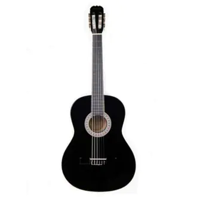
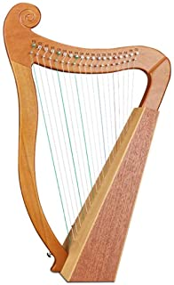
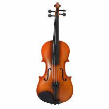
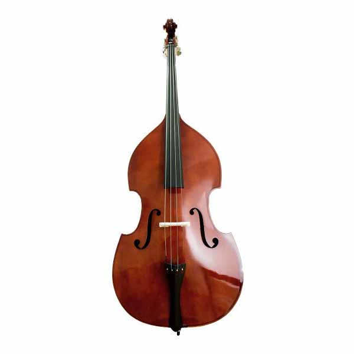

- INSTRUMENTOS DE CUERDA -
Los instrumentos de cuerda o cordófonos son instrumentos musicales que producen sonidos por medio de las vibraciones de una o más cuerdas, usualmente amplificadas por medio de una caja de resonancia.
Estas cuerdas están tensadas entre dos puntos del instrumento y se hacen sonar pulsando, frotando o percutiendo la cuerda.
INSTRUMENTOS EN VENTA:
GUITARRA

La guitarra, también conocida como guitarra clásica o guitarra española,1 es un instrumento musical de la familia de los cordófonos,
es decir los instrumentos que producen su sonido al hacer vibrar las cuerdas.
Is Discontinued By Manufacturer : No
Dimensiones del producto : 45.72 x 20.32 x 121.92 cm; 2.31 kg
Producto en Amazon.com.mx desde : 1 agosto 2014
Fabricante : Jasmine
ASIN : B0002GXZK4
Número de modelo del producto : S34C
Clasificación en los más vendidos de Amazon: nº336 en Instrumentos Musicales (Ver el Top 100 en Instrumentos Musicales)
nº1 en Guitarras Acústicas de Cuerdas Metálicas
PRECIO: $5,500.00
ARPA

El arpa2 es un instrumento de cuerda pulsada formado por un marco resonante y una serie variable de cuerdas tensadas entre la sección inferior y la superior.
Este instrumento tiene sus orígenes en Egipto y Grecia, cuyas civilizaciones fueron las primeras en teorizar la armonización musical, y les permitió desarrollar las técnicas para construir instrumentos cordófonos.
El sonido se obtiene al tocar las cuerdas con los dedos.
Dimensiones del paquete : 43.61 x 29.59 x 8.61 cm; 1.37 kg
Producto en Amazon.com.mx desde : 29 enero 2021
Fabricante : H HUKOER
ASIN : B08RDMTF53
Clasificación en los más vendidos de Amazon: nº23,021 en Instrumentos Musicales (Ver el Top 100 en Instrumentos Musicales)
nº1,761 en Instrumentos de Cuerda (Instrumentos Musicales)
PRECIO: $8,000.00
VIOLÍN

El violín (del italiano violino, diminutivo de viola) es un instrumento de cuerda. Quién lo toca recibe el nombre de violinista.
De la familia de las cuerdas frotadas, es el más pequeño y agudo entre los de su clase, que se compone de una caja de resonancia en forma de 8,
un mástil sin trastes y cuatro cuerdas que se hacen sonar con un arco.1
Dimensiones del producto 19 x 7 x 60 cm; 478 g
Número de modelo del producto VM-4/4
ASIN B079Y11MKC
Producto en Amazon.com.mx desde 19 diciembre 2017
Opinión media de los clientes 4.1 de 5 estrellas 99 calificaciones
4.1 de 5 estrellas
Clasificación en los más vendidos de Amazon nº90 en Instrumentos Musicales (Ver el Top 100 en Instrumentos Musicales)
nº1 en Violines
Is Discontinued By Manufacturer No
PRECIO: $3,789.00
CONTRABAJO

El contrabajo1 es un instrumento musical de cuerda frotada de tesitura grave. Suele tener cuatro cuerdas. El músico que toca el contrabajo recibe el nombre de contrabajista.
En otros instrumentos de la familia del contrabajo, como el violín, la viola, el violonchelo y el octabajo,
las cuerdas se afinan por quintas ascendentes. En el contrabajo se afinan por cuartas ascendentes: mi-la-re-sol.
Dimensiones del paquete 80 x 24 x 13.2 cm; 1.58 kg
Número de modelo del producto DLX-LSV44
ASIN B01I7DPSOY
Producto en Amazon.com.mx desde 9 julio 2016
Opinión media de los clientes 4.2 de 5 estrellas 101 calificaciones
4.2 de 5 estrellas
Clasificación en los más vendidos de Amazon nº1,666 en Instrumentos Musicales (Ver el Top 100 en Instrumentos Musicales)
nº12 en Violines
PRECIO: $4,300.00